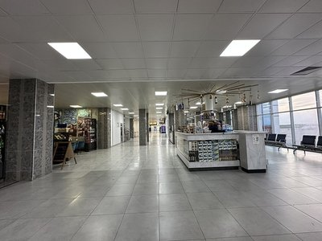
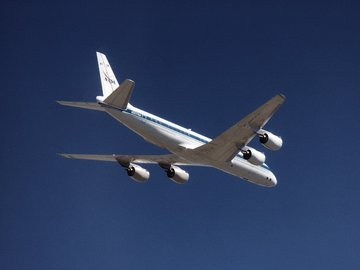

Расписание рейсов
На главную | Покупка билетов | Картинка-меню

Все рейсы выполняются из международного аэропорта «Манас» (г. Бишкек). Регистрация на рейс
начинается за 3 часа и заканчивается за 40 минут до вылета. Время вылета указано местное.
Международные рейсы
- Бишкек → Москва (Шереметьево) — ежедневно, вылет 06:40
- Бишкек → Стамбул — пн, вт, чт, пт, вс, вылет 09:15
- Бишкек → Дубай — вт, чт, сб, вс, вылет 23:50
- Бишкек → Алматы — пн, ср, пт, вылет 12:30
Внутренние рейсы
- Бишкек → Ош — ежедневно, вылеты 07:00, 13:20, 19:45
- Бишкек → Джалал-Абад — пн, ср, пт, вылет 10:10
- Бишкек → Каракол — сб, вс (летний сезон), вылет 08:30

Нажмите на картинку, чтобы вернуться на главную